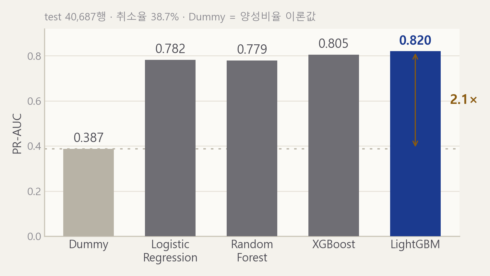
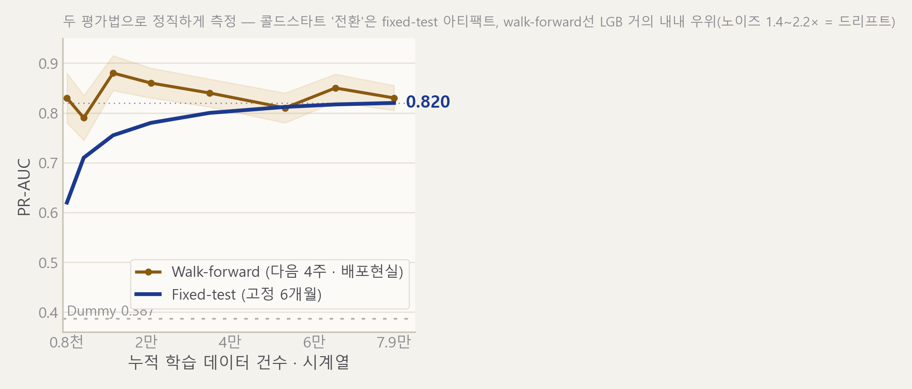
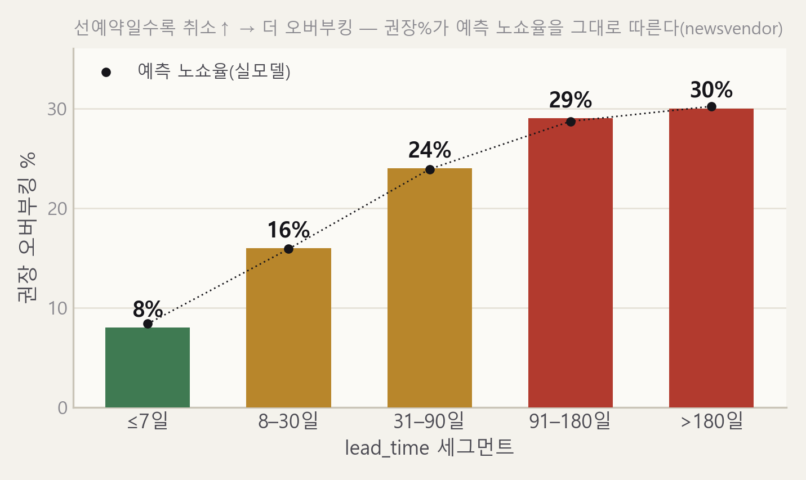
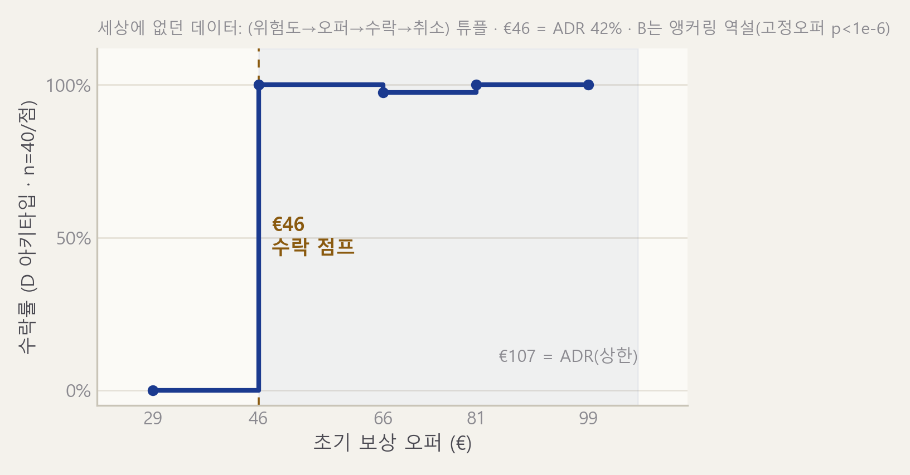
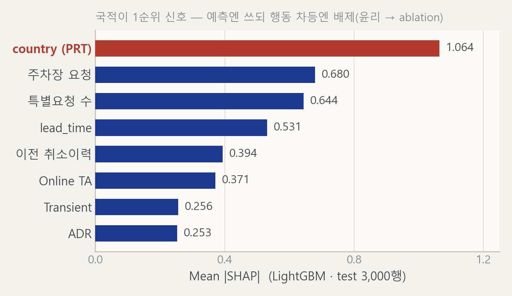
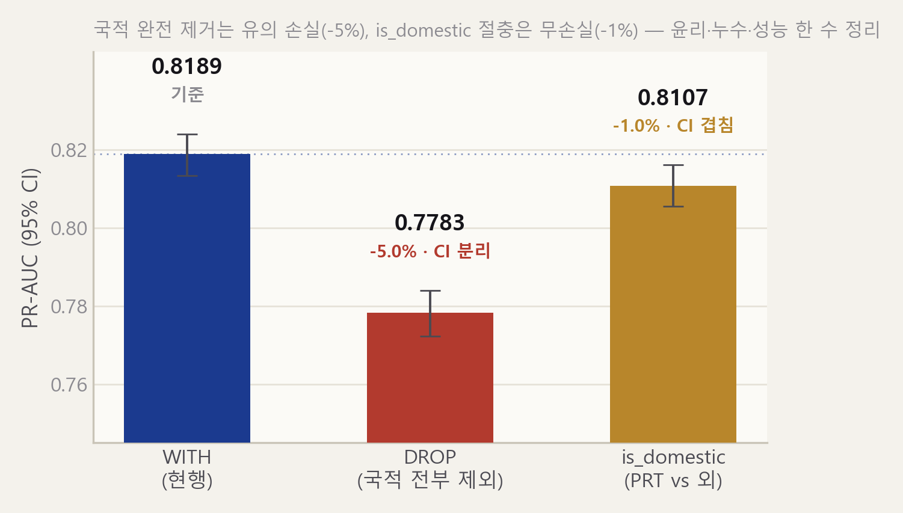

호텔 예약이 들어올 때마다 기록이 쌓이고, 그 기록으로 컴퓨터 예측이 점점 정확해집니다. 이 도구로 호텔의 수익과 운영 안정성을 키웁니다. 오늘 보여드릴 초과예약(비행기처럼 좌석보다 조금 더 받기)은 그 첫 적용 사례입니다.
여러 예약 경로(직접·여행사·온라인)로 흩어진 예약을 한곳으로. 예약 하나하나가 곧 배움의 재료입니다.
취소 예측 정확도(예측이 맞는 정도) 0.820 — 그냥 찍기보다 2.1배 정확. 가장 자신 있는 부분입니다.
지금껏 아무도 못 모은 '손님과의 흥정 기록'을 모으고, 같은 도구를 다른 문제로 확장합니다.
시작 — 호텔이 겪는 진짜 문제는 무엇이고, 왜 프로그램이 아니라 '도구'가 주인공일까요?
Hotel No-Show DSS · 2026.06.10빈 방은 그날 안 팔면 매출이 영영 사라집니다(비행기 빈 좌석처럼). 그래서 조금 더 받지만, 너무 많이 받으면 손님을 다른 호텔로 보내야 합니다. 그 균형을 정할 판단 도구가 필요합니다.
한 번 비면 그 밤의 매출은 영영 못 받습니다(회복 불가). 너무 적게 받으면 곧장 매출이 줄어듭니다.
채우려다 손님이 다 나타나면 방이 모자라 손님을 다른 호텔로 보내야 합니다. 보상·평판 비용이 듭니다.
… 판단을 도와줄 도구가 필요합니다 — 그 도구의 주인공은 누구일까요?
02 · 문제중간발표의 주인공은 취소를 맞히는 예측 프로그램이었습니다. 최종발표의 주인공은 데이터를 모으는 도구입니다 — 예측 프로그램은 그 도구가 만든 첫 결과물입니다.
| 중간발표 때 | 최종발표 (오늘) | |
|---|---|---|
| 주인공 | 취소 예측 프로그램 (정확도 0.820) | 데이터 모으는 도구 · 예측은 첫 결과물 |
| 메시지 | "왜 하는가" (필요성 호소) | 무엇을 만들었나 + 작동 증거 + 합법성 |
| 개인정보 | 교수님께 지적받음 | 손님 동의를 먼저 받는 설계로 정면 대응 (→ 12번 장) |
… 그렇다면 — 그 데이터는 어디서, 어떻게 우리 도구로 들어올까요?
03 · 관점 바꾸기여러 경로로 흩어진 예약이 우리 도구 한곳으로 모입니다. 예약 하나하나가 곧 배움의 재료입니다.
실제 앱에서 예약이 시간순으로 쌓이는 화면을 띄워 보여줍니다. 정상은 초록 점, 취소는 빨간 점으로 표시. 데이터: hub_stream.json (2만 5천 건 경량판 · 전체 11만 9천 건 중) · 예비용 dss_story_demo.html.
… 데이터가 쌓였습니다 — 이 데이터로 우리는 무엇을 가장 먼저, 가장 단단하게 증명할까요?
04 · 데이터 유입
… 단단한 숫자입니다 — 그런데 우리는 이걸 한 가지 방법으로만 쟀을까요?
05 · 예측 정확도정해진 6개월을 맞히는 방법과, 실제 운영처럼 매주 다음 한 달을 미리 맞혀보는 방법 — 두 가지로 함께 잰 것 자체가 정직함의 증거입니다.

그래서 "한 번 정하고 끝내지 말라"는 건, 손님 패턴이 시간 따라 변하기 때문입니다 → 계속 지켜보고 다시 골라야 합니다.
… 누가 위험한지 알았으니 — 호텔은 방을 몇 % 더 받아야 할까요?
06 · 두 가지 방법정직 각주 · 실제 운영에선 성능이 계절·수요에 따라 변합니다 — 매달 미리 맞히기가 한 시점 채점보다 1.4~2.2배 더 출렁(잘 맞던 예측도 후반엔 눈에 띄게 나빠질 만큼). 그래서 계속 지켜보고 다시 골라야 합니다.
늘 몇 명은 안 나타나니, 안 나타날 만큼 미리 더 받아두는 것입니다. 호텔도 방보다 예약을 조금 더 받습니다.
취소가 생긴 만큼 빈 방이 남습니다. 그날 못 팔면 매출은 영영 0원입니다.
취소될 만큼만 더 받아 방을 꽉 채웁니다. 빈 방도, 모자란 방도 없습니다.
손님이 다 나타나 방이 모자라고, 손님을 다른 호텔로 보내야 합니다(보상·평판 비용).
… '얼마나 더 받느냐'가 전부입니다 — 우리 데이터는 그 답을 어떻게 계산했을까요?
07 · 초과예약이란
권장 비율이 예측된 취소율을 그대로 따라갑니다 — 추측이 아니라 데이터가 정한 숫자입니다. 국적은 일부러 뺐고, '얼마나 미리 예약했는지'만 씁니다.
… 그래도 예측은 빗나갑니다 — 방이 모자라면 손님에게 얼마를 보상해야 할까요?
08 · 초과예약 비율정직 각주 · 전체 18~20%는 업계 5~15%보다 높습니다 — 이 데이터셋 취소율(37%)이 유독 높기 때문입니다. 실제 적용 땐 호텔의 진짜 비용 비율과, 실제에 맞춰 바로잡은 확률로 맞춥니다(보정은 14번 장에서 설명).
방이 모자라 손님을 보낼 때 보상은 약 46~107유로(1박 요금의 0.4~1.0배) — 손님 흥정·업계 관행·빈 방 손해가 같은 구간에서 만납니다.
| 어디서 나온 값인가 | 값 | 1박 요금 대비 | 성격 |
|---|---|---|---|
| (가) 가상 손님이 받아들인 금액 | €46 | 약 42% | 손님 흥정 (우리가 수집) |
| (나) 업계 관행 — 첫날 숙박비 | €107 | 약 100% +교통 | 실제 호텔들 관행 |
| (다) 빈 방으로 날리는 손해 (위쪽 한계) | €107 | 100% | 실제 1박 평균 요금 |
… 그럼 위쪽 한계는 무엇이 누를까요? — 바로 손님이 남길 후기, 즉 평판입니다.
09 · 보상 검증손님을 다른 호텔로 보낼 때 법으로 정한 보상은 없습니다(미리 낸 돈만 환불). 그래서 46유로는 아래, 1박 요금이 위 — 그 위쪽 한계를 누르는 힘이 평판 비용입니다.
별점 1점↓ = 매출 5~9%↓ · 나쁜 후기 3건+ → 새 손님의 79%가 예약 포기. 그래서 46유로는 아래, 1박 요금이 위쪽 한계.
… 그런데 그 46유로는 어디서 나왔나요? — 바로 세상에 없던 데이터를 우리가 만들었기 때문입니다.
10 · 평판
모으지 않으면 영영 모를 데이터 — 이 도구가 그걸 직접 만들어 키웁니다.
… 같은 방식을 다른 문제에 걸면? — 이 도구는 초과예약 하나로 끝나지 않습니다.
11 · 흥정 데이터 수집같은 도구가 여러 문제로 확장됩니다. 새 문제는 데이터가 0에서 시작합니다 — 그런데 데이터를 0부터 쌓는 법은 우리가 이미 보여드렸습니다.
완료 (첫 사례) — 정확도·비율·보상
수요·취소 예측으로 요금 조정 · 앞으로
몇 명 올지 예측 → 직원 배치 · 앞으로
요청 패턴 → 추가 서비스 추천 · 앞으로
새 문제는 데이터 0에서 출발하지만, 우리가 "데이터가 쌓이면 어떻게 똑똑해지는지"를 실제로 보여드렸습니다 — 같은 방식으로 채우면 됩니다.
… 큰 주장을 폈으니 — 마지막으로, 우리는 이걸 왜 믿어도 될까요?
12 · 확장성

예측 영향 1순위지만 손님 차별엔 안 씁니다. '내국인 여부'로만 단순화해 차별 우려와 정보 누수를 함께 없앴습니다.
손님이 먼저 동의·거부해도 불이익 없음·언제든 취소(유럽 개인정보법 동의권)·매니저가 최종 결정(자동결정 거부권). 강제 적용은 안 합니다.
… 윤리와 법은 닫았습니다 — 그렇다면 이 예측은 실제로 효과가 있을까요?
13 · 윤리 · 법한계(정직) · 국적을 빼도 요금·예약 유형 같은 다른 정보로 간접 차별이 남을 수 있습니다. 이걸 정식으로 다 재는 건 6일 안엔 무리라 한계로 밝혀둡니다.
우리 예측은 '누가 더 위험한지 줄 세우기'는 잘하지만, '몇 %가 취소될지 개수 맞히기'는 좀 낮게 잡습니다. 줄 세우기와 개수 맞히기는 다른 일입니다.
예측 취소율 23% < 실제 38.7% — 등수는 정확히 매기지만 점수는 살짝 낮게 부르는 채점자처럼, 줄 세우기는 잘하나 개수는 낮게 잡습니다. 줄 세우기(정확도) vs 개수 맞히기(보정 확률)를 구분 → 초과예약 비율은 보정 후 적용합니다.
핵심 숫자는 실제 데이터가 책임집니다. 인공지능 손님 시뮬은 데이터 모으는 방식의 시연일 뿐, 진짜 검증은 실제 운영 기록이 합니다. 약점을 먼저 밝히는 게 신뢰를 높입니다.
… 의심을 닫았으니 — 우리가 만든 것을 세 기둥으로 정리합니다.
14 · 효과 · 보정데이터 모으는 도구 — 호텔 예약 데이터를 한곳에 모아 예측으로 수익·운영 안정성을 키웁니다.
실제 데이터로 증명 — 취소 예측 정확도 0.820(그냥 찍기의 2.1배), 초과예약 8~30% · 보상 약 46~107유로까지 실제 데이터로.
없던 데이터를 만든다 — 손님 흥정 기록을 동의 먼저 받는 설계로 합법 수집, 같은 도구로 새 문제 확장.
신뢰의 근거 · 우리는 손님 피해(평판)까지 비용에 넣었기에 답이 보수적으로(손님에게 후하게) 나옵니다 — 약점을 먼저 드러내는 설계가 신뢰를 높입니다.
마무리 — 두뇌(예측 엔진)를 만들었고, 그 두뇌는 쓸수록 똑똑해집니다. 질문 받겠습니다.
15 · 결론